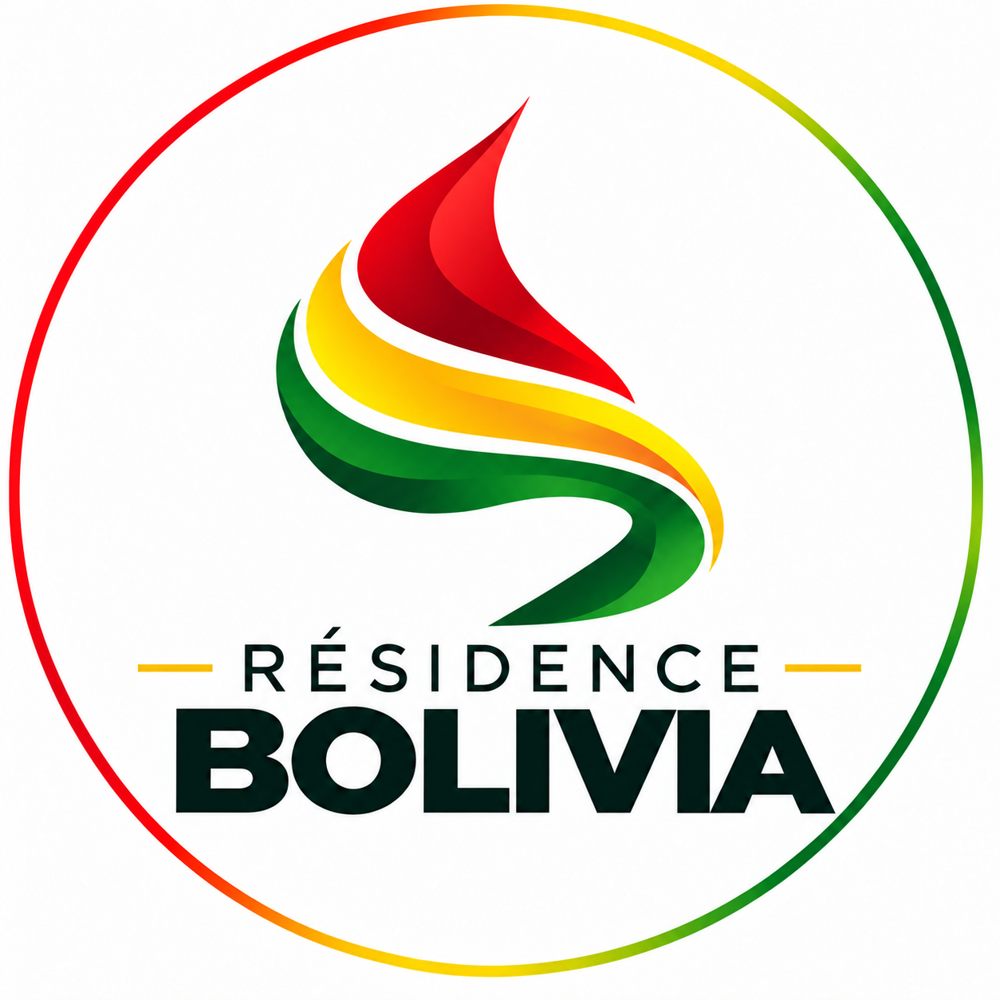

Résidence Bolivia

Découvrez le potentiel exceptionnel de la Bolivie. Des opportunités concrètes, les bons contacts officiels et un accompagnement de A à Z à Santa Cruz de la Sierra.
Découvrez nos formules d'accompagnement juridique et administratif sur-mesure :
Idéal pour s'installer légalement et tester le pays sans pression.
La formule idéale pour s'installer sereinement sur le long terme.
Le pack pour obtenir votre statut définitif et vous installer à long terme.
Zéro stress. Tout est planifié et cadré avant votre départ.
Vous réunissez vos documents requis en Europe. Nos correspondants boliviens vérifient tout en amont et préparent les traductions certifiées à Santa Cruz.
Durant votre court séjour sur place, nous gérons ensemble les enregistrements notarials, le passage aux services d'immatriculation et la soumission DIGEMIG.
Une fois votre titre approuvé par la DIGEMIG, nous finalisons l'émission de votre carte d'identité d'étranger auprès du SEGIP pour vous la remettre en main propre.
Un pays en pleine mutation, offrant un coût de vie abordable, une grande liberté d'entreprise et un potentiel d'investissement élevé.
Veritable poumon économique de la Bolivie, Santa Cruz attire entrepreneurs et investisseurs internationaux grâce à sa croissance soutenue et son climat d'affaires dynamique.
Grâce à un coût de la vie particulièrement bas en comparaison avec l'Europe, vous optimisez vos coûts de fonctionnement, de logement et de style de vie au quotidien.
Les étrangers peuvent devenir propriétaires en Bolivie avec une pleine sécurité juridique. Le marché immobilier sur plan offre des rendements très intéressants.
La Bolivie constitue un ancrage géographique stratégique au cœur du continent sud-américain pour diversifier son patrimoine et développer ses activités.
Tout ce que vous devez savoir avant d'engager votre dossier en Bolivie.
Pour déposer votre dossier de résidence auprès de la DIGEMIG, vous devez présenter un passeport valide (au moins 6 mois) ainsi que les vérifications et certificats requis :
Comptez environ 21 jours sur place à Santa Cruz de la Sierra. C'est le temps nécessaire pour passer les examens médicaux de routine, effectuer le relevé d'empreintes auprès de la police/Interpol et déposer officiellement le dossier aux guichets de la DIGEMIG et du SEGIP.
Aucune inquiétude. Nous vous accompagnons personnellement à chaque étape et à chaque rendez-vous administratif (DIGEMIG, SEGIP, Notaire). Nos traducteurs officiels partenaires s'assurent que tous vos documents juridiques sont rédigés sans la moindre faille.
Oui. Une fois que vous possédez votre carte d'identité bolivienne d'étranger émise par le SEGIP, vous pouvez homologuer ou obtenir votre permis de conduire bolivien via les procédures municipales prévues.
La Bolivie exige de démontrer des moyens de subsistance ou un projet légitime (activités indépendantes, rentier, investisseur, contrat ou travail à distance). Nous analysons ensemble votre profil pour structurer le dossier le plus solide possible aux yeux de la DIGEMIG.
Un acompte de 50 % par personne selon la formule choisie est réglé au moment de la commande pour initier la vérification juridique de vos documents et réserver vos créneaux de prise en charge. Le solde de 50 % est versé une fois arrivé en Bolivie lors du lancement effectif de vos démarches sur le terrain.
Chaque situation est unique (indépendant, retraité, entrepreneur, nomade). Ne prenez aucun risque inutile. Planifions un premier entretien pour valider votre projet d'installation en Bolivie et structurer votre dossier.
📅 Planifiez votre consultation :
Réserver un appel avec nous